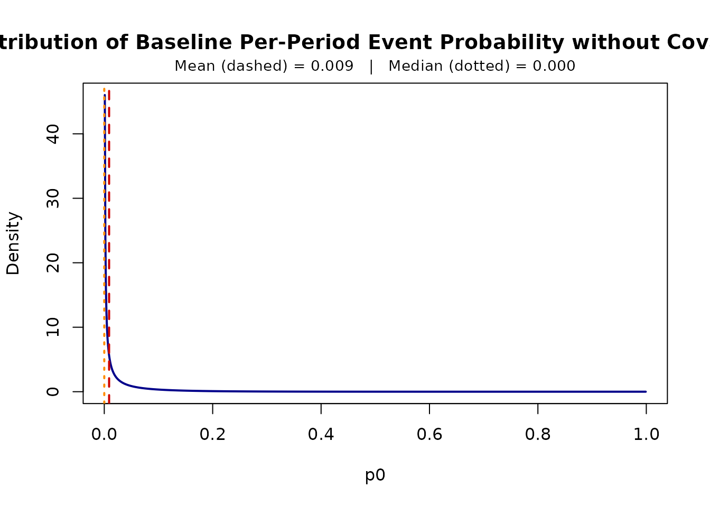
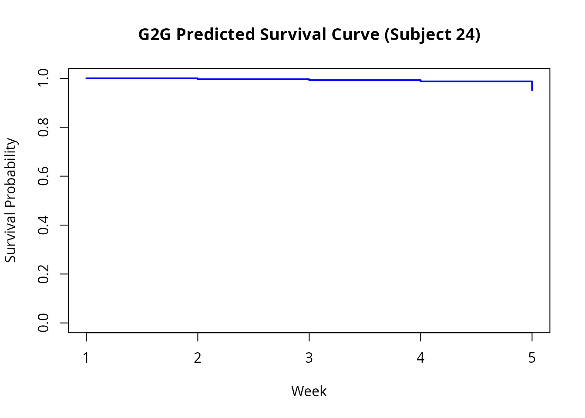
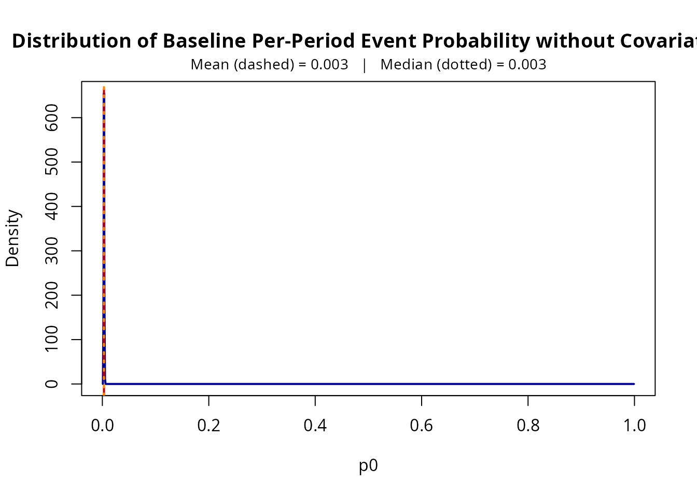
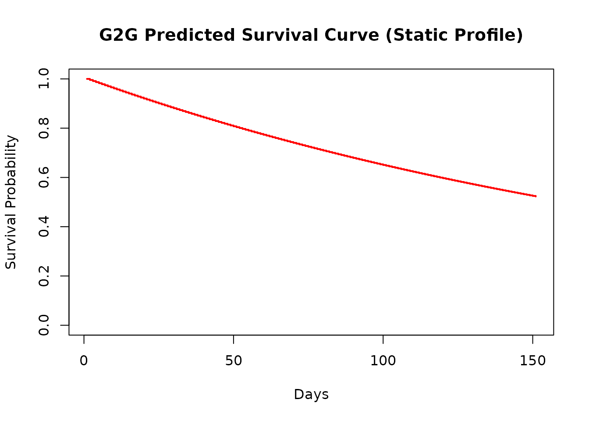

Introduction to G2Gcov: Discrete-Time Duration Models with Time-Varying Covariates
Ka Lok Lee, Aaron Ramsey, and Noah Park
2026-11-04
Source:vignettes/introduction_to_g2gcov_vignette.rmd
introduction_to_g2gcov_vignette.rmdPackage Overview
G2Gcov implements maximum likelihood estimation,
diagnostic plotting, and survival/retention trajectory forecasting of
the Grassia(II)-Geometric (G2G) distribution for discrete-time duration
data with both time-varying and time-invariant covariates and unobserved
cross-sectional heterogeneity, following the methodology of Fader et
al. (2019) and Fader and Hardie (2020).
| Function | Purpose |
|---|---|
G2G_varying_MLE() |
Maximum likelihood estimation with time-varying covariates |
G2G_static_MLE() |
Maximum likelihood estimation with time-invariant covariates |
print() |
S3 print method displaying estimates, SEs, Wald confidence intervals, and AIC |
plot_p0() |
Plot baseline per-period event probability density across the cohort |
G2G_varying_survival() |
Compute discrete-time survival function along dynamic covariate paths |
G2G_varying_retention() |
Compute period-to-period retention function along dynamic covariate paths |
G2G_static_survival() |
Compute discrete-time survival function under static covariates |
G2G_static_retention() |
Compute period-to-period retention function under static covariates |
Time-Varying Covariates in the G2G Model
The G2G model is a discrete-time duration model in which the individual-level per-period event probability is reparameterized as , with across subjects to capture unobserved heterogeneity. Time-varying covariates in period , , enter via a complementary log-log link with coefficients ,
which yields the closed-form survivor function
The probability mass function (PMF) is:
The likelihood function simply consists of the PMF and for uncensored and censored subjects, respectively.
Required Format for Time-Varying Covariates Data
Data must be in person-period (long) format:
- One row per subject per time period.
- A subject identifier column linking rows to the same individual.
- An event indicator equaling 1 in the period the event occurred, and 0 in all preceding periods. All 0s through the last observed period for censored subjects
| Column | Type | Description |
|---|---|---|
id |
Identifier | Unique subject identifier (numeric, character, or factor) |
week (or time) |
Integer | Sequential discrete period index () |
status |
Binary (0/1) | 1 if the event occurred in that specific period; 0 in the preceding periods; all 0s through the last observed period for censored subjects |
coupon, anyp, ... |
Numeric / Factor | Dynamic or static covariates (continuous, binary, or multi-level) |
Factor and character covariates are expanded into dummy variables
through standard R formula mechanics (model.matrix,
treatment contrasts).
Example 1: Time-Varying Covariates (kb_data)
Note on Datasets: To ensure this vignette builds rapidly within CRAN limits, we evaluate the models using
kb_data_sample, a 20-subject subset of the package’s full data intended for quick trials and interactive exploration. For full empirical analyses, simply use the entire cohort of 1,499 subjects viakb_data<-G2Gcov::kb_data. The syntax remains identical.
Each row in the data represents one customer-week. We print the first 50 rows to illustrate the person-period structure required for time-varying modeling.
library(G2Gcov)
library(survival)
# Load the quick-start sample dataset
kb_data_sample<-G2Gcov::kb_data_sample
# Inspect the person-period data structure
round(head(kb_data_sample, 50), 2)
#> id week num_weeks censor coupon anyp status
#> 1 24 1 4 0 0.00 55.61 0
#> 2 24 2 4 0 0.00 55.82 0
#> 3 24 3 4 0 0.02 55.65 0
#> 4 24 4 4 0 0.13 81.17 1
#> 5 49 1 7 0 0.00 55.61 0
#> 6 49 2 7 0 0.00 55.82 0
#> 7 49 3 7 0 0.02 55.65 0
#> 8 49 4 7 0 0.13 81.17 0
#> 9 49 5 7 0 0.08 74.45 0
#> 10 49 6 7 0 0.04 73.82 0
#> 11 49 7 7 0 0.02 46.83 1
#> 12 165 1 24 0 0.00 55.61 0
#> 13 165 2 24 0 0.00 55.82 0
#> 14 165 3 24 0 0.02 55.65 0
#> 15 165 4 24 0 0.13 81.17 0
#> 16 165 5 24 0 0.08 74.45 0
#> 17 165 6 24 0 0.04 73.82 0
#> 18 165 7 24 0 0.02 46.83 0
#> 19 165 8 24 0 0.01 0.00 0
#> 20 165 9 24 0 0.00 72.41 0
#> 21 165 10 24 0 0.02 71.52 0
#> 22 165 11 24 0 0.11 89.32 0
#> 23 165 12 24 0 0.07 56.05 0
#> 24 165 13 24 0 0.04 12.58 0
#> 25 165 14 24 0 0.02 13.33 0
#> 26 165 15 24 0 0.01 43.31 0
#> 27 165 16 24 0 0.00 41.46 0
#> 28 165 17 24 0 0.00 41.95 0
#> 29 165 18 24 0 0.00 44.47 0
#> 30 165 19 24 0 0.00 22.90 0
#> 31 165 20 24 0 0.00 8.82 0
#> 32 165 21 24 0 0.00 0.00 0
#> 33 165 22 24 0 0.00 0.00 0
#> 34 165 23 24 0 0.00 32.20 0
#> 35 165 24 24 1 0.00 33.40 0
#> 36 321 1 24 0 0.00 55.61 0
#> 37 321 2 24 0 0.00 55.82 0
#> 38 321 3 24 0 0.02 55.65 0
#> 39 321 4 24 0 0.13 81.17 0
#> 40 321 5 24 0 0.08 74.45 0
#> 41 321 6 24 0 0.04 73.82 0
#> 42 321 7 24 0 0.02 46.83 0
#> 43 321 8 24 0 0.01 0.00 0
#> 44 321 9 24 0 0.00 72.41 0
#> 45 321 10 24 0 0.02 71.52 0
#> 46 321 11 24 0 0.11 89.32 0
#> 47 321 12 24 0 0.07 56.05 0
#> 48 321 13 24 0 0.04 12.58 0
#> 49 321 14 24 0 0.02 13.33 0
#> 50 321 15 24 0 0.01 43.31 0We estimate the model by directly supplying the formula and the subject identifier. Please note that both estimation functions require at least one covariate on the right-hand side of the formula.
# Estimate the discrete-time model with dynamic marketing covariates
fit_varying <- G2G_varying_MLE(
Surv(week, status) ~ coupon + anyp,
data = kb_data_sample,
subject = "id"
)
# View parameter estimates, standard errors, and Wald confidence intervals
print(fit_varying)
#> G2G Model Fit
#> ----------------------------------------------------
#> Convergence: Converged (code 0)
#> Log-likelihood: -11.1869
#> AIC: 30.3739
#> Parameters: 4
#>
#> Coefficients:
#> Estimate Std.Error Lower.95 Upper.95
#> r (shape) 0.0611 0.1047 0.0021 1.7580
#> alpha (rate) 6.3229 31.1821 0.0004 99709.9092
#> coupon 24.9515 22.4348 -19.0199 68.9230
#> anyp -0.0159 0.0554 -0.1246 0.0927
#>
#> Warning: Extremely wide confidence intervals for baseline parameters suggest a flat likelihood ridge (common with small sample sizes or few observed events). Interpret estimates and limits with caution.Interpreting the Coefficients
Each coefficient acts on the complementary log-log scale, so is a hazard ratio: a one-unit increase in a numeric covariate, or a switch from the reference level to a given factor level, multiplies by . A positive raises the per-period event probability (shorter durations); a negative lowers it (longer durations).
The baseline per-period event probability, with , describes subjects at zero for numeric covariates and at the reference level of each factor.
Hazard ratios are expressed per unit of each covariate, so raw
coefficients are not comparable across covariates measured on different
scales, such as coupon and anyp. To make an
effect concrete, compute the hazard ratio for a meaningful change
,
.
An effect is distinguishable from zero when the confidence interval for
excludes
(equivalently, when the interval for the hazard ratio excludes
).
Estimation Details
Internally, G2G_varying_MLE() applies several techniques
to ensure robust numerical optimization:
- Automatic Standardization: To improve numerical stability and convergence of the BFGS algorithm, all continuous covariates are automatically standardized (centered and scaled) prior to maximizing the likelihood. Upon convergence, the resulting coefficient estimates are dynamically rescaled back to their original metric, ensuring the output is immediately interpretable on the scale of the original data.
- Delta Method for Standard Errors: The optimization routines estimate baseline parameters in an unconstrained space (e.g., using and to enforce strict positivity constraints). The package computes the inverse Hessian matrix and applies the multivariate Delta method to derive standard errors on their original scale.
-
Wald Confidence Limits: Using Delta method standard
errors, the package automatically calculates and reports Wald confidence
intervals: symmetric for the covariate coefficients, and computed on the
log scale for
and
so they remain strictly positive. By default, it reports 95% confidence
limits, which can be modified via the
levelargument (e.g.,level = 0.99). -
G2G_static_MLE()applies these same optimization and standardization techniques.
Visualizations and Projections
We can visualize the implied distribution of the baseline weekly event probability across the population:
plot_p0(fit_varying)
A note on and : The standard errors of and can be as large as the estimates themselves, particularly in small samples. This is typical of a gamma mixing distribution and is not a sign of a problem: the two parameters are often highly correlated, because many combinations imply very similar distributions of . Interpret them jointly, for example through the implied distribution of shown by
plot_p0(), rather than one at a time.
Next, we extract the survival curve explicitly using
G2G_varying_survival() by passing a specific customer’s
covariate path, and plot the predicted step-function. The length of the
generated survival curve aligns with the length of the covariate path
provided:
# Predict individual survival curve S(t) along a specific customer trajectory
# (Subject 24 is included in our sample)
customer_path <- kb_data_sample[kb_data_sample$id == 24, c("coupon", "anyp")]
# Compute the survival curve predictions explicitly
surv_est <- G2G_varying_survival(solution = fit_varying, X_mat = customer_path)
# Plot the predicted survival curve using base R graphics
plot(
seq_along(surv_est),
surv_est,
type = "s", # Step function for discrete time
col = "blue",
lwd = 2,
xlab = "Week",
ylab = "Survival Probability",
main = "G2G Predicted Survival Curve (Subject 24)",
ylim = c(0, 1)
)
We can also project conditional period-to-period retention function,
defined as
,
along that same dynamic customer path using
G2G_varying_retention():
# Compute period-to-period retention r(t) = S(t)/S(t-1)
ret_est <- G2G_varying_retention(solution = fit_varying, X_mat = customer_path)
# Display
head(data.frame(Week = seq_along(ret_est), Retention = round(ret_est, 4)))
#> Week Retention
#> 1 1 1.0000
#> 2 2 0.9961
#> 3 3 0.9964
#> 4 4 0.9947
#> 5 5 0.9640Example 2: Static Covariate Baseline
(survival::veteran)
If covariates are fixed for each subject, the cumulative hazard
simplifies. G2G_static_MLE() handles data in traditional
cross-sectional format (one row per subject) and automatically manages
factor variables like celltype. We demonstrate this using
the survival::veteran dataset.
vet <- survival::veteran
# Using a 99% confidence limits in this example
fit_static <- G2G_static_MLE(
Surv(time, status) ~ age + celltype,
data = vet,
level = 0.99
)
# View parameter estimates and model convergence for the static baseline
print(fit_static)
#> G2G Model Fit
#> ----------------------------------------------------
#> Convergence: Converged (code 0)
#> Log-likelihood: -733.1773
#> AIC: 1478.3546
#> Parameters: 6
#>
#> Coefficients:
#> Estimate Std.Error Lower.99 Upper.99
#> r (shape) 24.4605 65.4850 0.0248 2.417306e+04
#> alpha (rate) 8031.0071 23544.0705 4.2192 1.528657e+07
#> age 0.0074 0.0097 -0.0175 3.230000e-02
#> celltypesmallcell 1.0711 0.2450 0.4401 1.702200e+00
#> celltypeadeno 1.2015 0.2819 0.4753 1.927800e+00
#> celltypelarge 0.2415 0.2840 -0.4900 9.730000e-01
#>
#> Warning: Extremely wide confidence intervals for baseline parameters suggest a flat likelihood ridge (common with small sample sizes or few observed events). Interpret estimates and limits with caution.We plot the baseline event probability distribution at reference
covariate values (squamous cell type and age = 0). The first level of a
factor is its reference category (here squamous). For
character vectors, the first level is the alphabetically
first value; use relevel() or
factor(x, levels = ...) to choose a different
reference:
plot_p0(fit_static)
Just like the time-varying model, we can project survival and period
retention for a specific profile (passing original factor levels) using
G2G_static_survival() and
G2G_static_retention(). In this situation, we can also
specify the length of these functions to be generated:
# Predict survival up to t = 150 days for a 49-year-old with squamous cell cancer
surv_static <- G2G_static_survival(
fit_static,
data.frame(age = 49, celltype = "squamous"),
150
)
plot(
seq_along(surv_static),
surv_static,
type = "s",
col = "red",
lwd = 2,
xlab = "Days",
ylab = "Survival Probability",
main = "G2G Predicted Survival Curve (Static Profile)",
ylim = c(0, 1)
)
# Predict period-to-period retention across the first 10 days
ret_static <- G2G_static_retention(
fit_static,
data.frame(age = 49, celltype = "squamous"),
10
)
data.frame(Day = seq_along(ret_static), Retention = round(ret_static, 4))
#> Day Retention
#> 1 1 1.0000
#> 2 2 0.9956
#> 3 3 0.9956
#> 4 4 0.9956
#> 5 5 0.9956
#> 6 6 0.9956
#> 7 7 0.9956
#> 8 8 0.9956
#> 9 9 0.9956
#> 10 10 0.9956
#> 11 11 0.9956References
- Fader, P. S., Hardie, B. G. S., McCarthy, D., & Vaidyanathan, R. (2019). Exploring the equivalence of two common mixture models for duration data. The American Statistician, 73(3), 288–295.
- Fader, P. S., & Hardie, B. G. S. (2020). Incorporating time-varying covariates in a simple mixture model for discrete-time duration data (Research Note No. 037). https://brucehardie.com/notes/037/time-varying_covariates_in_BG.pdf
Session Information
sessionInfo()
#> R version 4.6.2 (2026-10-29)
#> Platform: x86_64-pc-linux-gnu
#> Running under: Ubuntu 24.04.5 LTS
#>
#> Matrix products: default
#> BLAS: /usr/lib/x86_64-linux-gnu/openblas-pthread/libblas.so.3
#> LAPACK: /usr/lib/x86_64-linux-gnu/openblas-pthread/libopenblasp-r0.3.26.so; LAPACK version 3.12.0
#>
#> locale:
#> [1] LC_CTYPE=C.UTF-8 LC_NUMERIC=C LC_TIME=C.UTF-8
#> [4] LC_COLLATE=C.UTF-8 LC_MONETARY=C.UTF-8 LC_MESSAGES=C.UTF-8
#> [7] LC_PAPER=C.UTF-8 LC_NAME=C LC_ADDRESS=C
#> [10] LC_TELEPHONE=C LC_MEASUREMENT=C.UTF-8 LC_IDENTIFICATION=C
#>
#> time zone: UTC
#> tzcode source: system (glibc)
#>
#> attached base packages:
#> [1] stats graphics grDevices utils datasets methods base
#>
#> other attached packages:
#> [1] survival_3.8-12 G2Gcov_0.1.0
#>
#> loaded via a namespace (and not attached):
#> [1] cli_3.6.6 knitr_1.52 rlang_1.3.0 xfun_0.62
#> [5] otel_0.2.0 textshaping_1.0.5 jsonlite_2.0.0 htmltools_0.5.9
#> [9] ragg_1.5.2 sass_0.4.10 rmarkdown_2.32 grid_4.6.2
#> [13] evaluate_1.0.5 jquerylib_0.1.4 fastmap_1.2.0 yaml_2.3.12
#> [17] lifecycle_1.0.5 compiler_4.6.2 fs_2.1.0 lattice_0.23-1
#> [21] systemfonts_1.3.2 digest_0.6.39 R6_2.6.1 splines_4.6.2
#> [25] bslib_0.12.0 Matrix_1.7-6 tools_4.6.2 pkgdown_2.2.1
#> [29] cachem_1.1.0 desc_1.4.3